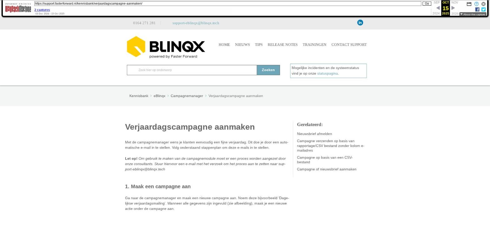

Verjaardagscampagne aanmaken
Met de campagnemanager wens je klanten eenvoudig een fijne verjaardag. Dit doe je door een automatische e-mail in te stellen. Volg onderstaand stappenplan om deze e-mails in te stellen.
Let op! Om gebruik te maken van de campagnemodule moet er een proces worden aangezet door onze consultants. Stuur hiervoor een e-mail met het verzoek om het proces aan te zetten naar support-eblinqx@blinqx.tech
1. Maak een campagne aan
Ga naar de campagnemanager en maak een nieuwe campagne aan. Noem deze bijvoorbeeld 'Dagelijkse verjaardagsmailing'. Wanneer alle gegevens zijn ingevuld (zie afbeelding), maak je een nieuwe actie onder de campagne aan.
2. Stel actie met herhaling in
Gebruik voor deze actie de bestaande rapportage 'CRM – Personen die vandaag jarig zijn'. Indien je niet beschikt over deze rapportage, kun je contact opnemen met je IT-manager of onze supportafdeling.
Bij het instellen van deze actie is het belangrijk dat je een herhalingsactie instelt. Dit doe je links door 'Aan' aan te vinken. Vervolgens voer je aan de rechterzijde de data in en zet je het interval op 'Dagelijks'. De tijd stel je in op 05.00 uur.
Door middel van een proces wordt de campagne iedere dag uitgevoerd. Dit proces draait op een vast moment. Wil je de herhalingscampagne direct uitvoeren na het aanmaken dan zet je 'herhalings actie direct verwerken' aan.
3. Personaliseer de afzender en het onderwerp
Wil je dat de e-mail persoonlijk overkomt? Voer dan je eigen naam in bij 'Afzender'. Je kunt de e-mail nog persoonlijker maken door ook je eigen e-mailadres als 'Verzender email' in te stellen. Daarnaast kun je met de tag [campagne->Voornaam] de voornaam van de ontvanger ophalen in het onderwerp. Zo wordt de ontvanger gelijk persoonlijk aangesproken.
Let op
Vink 'Tracking' aan om kliks op links te meten;
Zet 'Bewaar email' op 'Ja' om de e-mail op te slaan in het klantdossier.
Kies de tags via Tag invoeren.
4. Stel een boeiende e-mail op
In je correspondentieteksten kun je vooraf een template 'Verjaardagsmailing' maken. Hierin maak je de e-mail op die je standaard gebruikt bij het versturen van deze campagne.
Tips bij het opstellen van de mail:
Begin met een feestelijke afbeelding;
Spreek de ontvanger persoonlijk aan door het gebruik van tags. Ook kun je bijvoorbeeld de tag van de geboortedatum invoegen;
Gebruik de e-mail om een korting te geven op één van de diensten die je bedrijf aanbiedt.
Of… pak helemaal uit met een GIF
Een bewegende afbeelding is nog opvallender. Pak daarom uit met een originele felicitatiegroet, zoals deze van Boudesteyn Hypotheken en Verzekeringen.
Meer info over het gebruik van tags lees je hier.
5. Controleer lijst met ontvangers
Check altijd even de lijst met ontvangers. Misschien zit er iemand tussen die je toch liever even belt. Vink deze dan uit aan de linkerkant.
6. Test de e-mail voor je hem verzendt
E-mails worden niet in iedere e-mailclient hetzelfde weergegeven. Controleer daarom vooraf of de e-mail aankomt bij de ontvanger zoals je dat wilt. Stuur dus een voorbeeld naar jouw eigen e-mailadres. Zo zie je de e-mail precies zoals je klanten hem krijgen. Druk niet op de knop 'Uitvoeren'. De campagne wordt uitgevoerd door het achterliggende proces.
7. Meet en pas aan
Zo'n felicitatie is natuurlijk een mooi moment voor een herinnering aan jullie dienstenaanbod. En de ene mail werkt hierbij beter dan de andere. Probeer daarom verschillende teksten en kortingsacties uit. Via het tabblad 'Resultaat' zie je vervolgens precies op welke links er geklikt wordt.
Meer info over campagnes in eBlinqx?
Alles weten over het aanmaken van een campagne? Klik hieronder voor de volledige uitleg.
KENNISARTIKEL CAMPAGNE AANMAKEN
Afbeeldingen bij dit artikel


Schermafbeelding van de oorspronkelijke pagina

Bron: Wayback Machine-archief